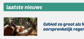
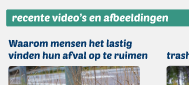

Welkom bij de homepagina
Onder het kopje "laatste nieuws" leest u allerlei artikels over zwerfafval in Rotterdam

Onder het kopje "recent video en afbeelding" zie u allerlei informatie over zwerfafval in Rotterdam

Welkom bij de collectiepagina
Hieronder zie u allerlei afval die u via camerapagina heeft ingescand. Bekijk alle details door hierin te klikken.
Probeer alle afval te verzamelen!
Welkom bij de camerapagina
Scan alle afval in door uw camera te openen. ALle afbeeldingen worden opgeslagen in het collectiepagina.
Welkom bij de routepagina
Door uw locatie in te voeren kunt u allerlei prullenbak zien in uw omgeving. Speciale prullenbakken kun u ook zien.